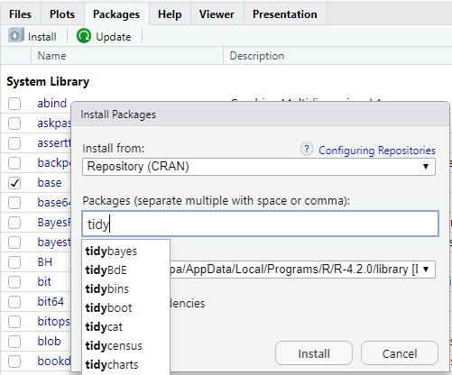

## Das Paket tidyverse installieren - einmalig
install.packages(tidyverse)
## Das Paket tidyverse laden - jedes Mal
library(tidyverse)9 Operatoren, Funktionen und Pakete
Letzte Änderung am 28. September 2023 um 14:04:26
“There sat that beautiful big machine whose sole job was to copy things and do addition. Why not make the computer do it? That’s why I sat down and wrote the first compiler. It was very stupid. What I did was watch myself put together a program and make the computer do what I did.” — Grace Hopper, Computer Programming Pioneer
Es ist immer schwierig, wann die Grundlagen von R einmal gelehrt werden sollte. Wenn du nichts von Programmierung bis jetzt gehört hast, dann mag es keinen Sinn ergeben mit Operatoren, wie dem Zuweisungspfeil <- und der Pipe %>% zu beginnen. Wir brauchen aber für die Programmierung folgende zentrale Konzepte.
- Wir müssen zusätzliche Pakete in R installieren und laden können in Kapitel 9.1.
- Wir müssen verstehen wie wir uns einen Vektor mit
c()bauen in Kapitel 9.3. - Wir müssen wissen was eine Funktion in R ist in Kapitel 9.4.
- Wir müssen den Operator Zuweisungspfeil
<-verstehen und anwenden können in Kapitel 9.5. - Wir müssen den Operator Pipe
%>%verstehen und anwenden können in Kapitel 9.6. - Wir müssen den Operator
$verstehen, da manche Funktionen in R nicht mit Datensätzen sondern nur mit Vektoren arbeiten können in Kapitel 9.7. - Wir müssen verstehen wie wir ein Modell in R mit der Tilde
~definieren in Kapitel 9.9. - Wir müssen wissen und verstehen wie wir mit
?englische Hilfeseiten öffnen können in Kapitel 9.10.
Nicht alle Konzepte brauchst du unmittelbar aber ich nutze diese Konzepte wiederholt in allen Kapiteln, so dass du hier immer wieder mal schauen kannst, was die Grundlagen sind.
9.1 Pakete und library()
Unterschied von Packages und Libraries in R
Du findest auf YouTube Einführung in R - Teil 03 - Unterschied Packages und Libraries in R als Video. Hier erkläre ich nochmal den Ablauf zwischen Installieren eines Paketes und dem Laden eines Paketes.
Als Vanilla beschreibt man in der Informatikerwelt ein Programm, was keine zusätzlichen Pakete geladen hat. Also die reinste Form ohne zusätzlichen Geschmack.
In der Vanilla-Variante hat R sehr wenige Funktionen. Ohne zusätzliche Pakete ist R mehr ein sehr potenter Taschenrechner. Leider mit der Funktionalität aus den 90’zigern, was die Programmierumgebung und die Funktionen angeht. Das wollen wir aber nicht. Wir wollen auf den aktuellen Stand der Technik und auch Sprache programmieren. Daher nutzen wir zusätzliche R Pakete.

In Abbildung 9.1 wird gezeigt wie du ein zusätzliches Paket installieren kannst. Hierbei ist nochmal wichtig den semantischen Unterschied zu wissen. Es gibt das Paket tidyverse was wir viel nutzen. Wir installieren einmalig Pakete der Funktion install.packages() oder eben wie in Abbildung 9.1 gezeigt. Wir nutzen die Funktion library() um ein Paket in R zu laden. Ja, es müsste anders heisen, tut es aber nicht.
Nun muss man sich immer merken, ob das Paket schon installiert ist oder man schreibt relativ viele library() untereinander. Das passiert schnell, wenn du viele Pakete laden willst. Dafür erlaubt dir das Paket pacman eine Vereinfachung. Die Funktion p_load() installiert Pakete, wenn die Pakete nicht installiert sind. Sollten die Pakete installiert sein, so werden die Pakete geladen. Du musst nur einmal install.packages(pacman) ausführen um das Paket pacman zu installieren.
pacman::p_load(tidyverse, magrittr, readxl)9.2 Anordnung der Fenster im RStudio
Wie dir sicherlich aufgefallen ist, sind in meinen Videos die einzelnen Kacheln im RStudio anders angeordnet. Der Grund ist einfach. Wir sind die meiste Zeit in dem Skript auf der linken Seite und schicken dann den R Code auf die rechte Seite. Normalerweise sind das Skript und die R Console links untereinander angeordnet. Das finde ich aber disfunktional. In Abbildung 9.2 und Abbildung 9.3 kannst du nachvollziehen, wie du die Anordnung der Kacheln im R Studio ändern kannst.


Du kannst vieles in den Global Options… anpassen - unter anderem auch das Aussehen (eng. Appearance).
9.3 Einen Vektor bauen c()
Wir können mit der Funktion c() Zahlen und Wörter zu einem Vektor kombinieren.
c("dog", "dog", "cat", "cat", "fox", "fox")[1] "dog" "dog" "cat" "cat" "fox" "fox"Hier werden die Wörter “dog”, “cat” und “fox” miteinader in einen Vektor kombiniert. Wir erinnern uns an das $ Zeichen, was uns erlaubt eine Variable als Vektor aus einem tibble()herauszuziehen.
Wir können auch Zahlen zusammenbauen oder aber ganze Bereiche mit dem : definieren. Wir lesen den : als “von bis”.
c(1, 8, 4, 5)[1] 1 8 4 5Die Zahlen von 1 bis 5 werden durch den : ausgegeben.
c(1:5)[1] 1 2 3 4 59.4 Funktionen
Wir haben schon einige Funktion nebenbei in R kennengelernt. Zum einen as.factor() um einen Faktor zu erstellen oder aus dem Kapitel 9.1, wo wir die Funktion install.packages() nutzen um ein Paket zu installieren oder aber die Funktion library() um ein Paket in R zu laden.
Funktionen sehen aus wie Wörter. Haben aber keine Gänsefüßchen und beinhalten auch keine Daten oder Vektoren. Funktionen können mit Daten und Vektoren rechnen und geben das Berechnete dann wieder. Nehmen wir als Beispiel die Funktion mean(), die den Mittelwert von einer Reihe Zahlen berechnet.
y <- c(1.2, 3.4, 2.1, 6, 4.3)
mean(y)[1] 3.4Eigentlich müssen in der Programmierung Objekte erst deklariert und somit erschaffen werden. Erst dann können Objekte initalisiert und somit befüllt bzw. etwas zugewiesen werden.
Wir sehen, dass wir mit der Funktion c() die Zahlen \(1.2, 3.4, 2.1, 6, 4.3\) zusammenkleben. Danach speichern wir die Zahlen in den Objekt y als einen Vektor ab. Wir müssen y nicht erst erschaffen, das Erschaffen und Speichern passiert in R in einem Schritt. Wir stecken nun den Vektor y in die Funktion mean() und erhalten den Mittelwert von \(3.4\) der Zahlen wiedergegeben.
Wir können auch eigene Funktionen mit dem Befehl function(){} erstellen. Du siehst schon den Unterschied, es sind hier zwei unterschiedlich Klammern. Schauen wir uns die Anwendung einmal im Beispiel an. Im ersten Fall bauen wir uns eine Funktion, die eigentlich nur die Aufgabe hat mehre Zeilen Code zusammenzufassen. Wir müssen die drei ... Punkte in die Funktion schreiben, da wir der Funktion nichts an Werten übergeben. Wenn wir my_mean() ausführen, erhalten wir immer den gleichen Mittelwert wieder.
Die Funktion divide_by() ist ein Alias für /. Siehe dazu auch Aliases in magrittr.
my_mean <- function(...){
res <- c(1.2, 3.4, 2.1, 6, 4.3) %>% sum() %>% divide_by(5)
return(res)
}
my_mean()[1] 3.4In dem vorherigen Fall können wir die Funktion my_mean() zwar wiederholt nutzen, aber es wäre schon besser, wenn wir einen beliebigen Zahlenvektor y in die Funktion stecken könnten und dann den Mittelwert berechnet bekommen. Wir bauen uns also eigentlich die in R schon existierende Funktion mean() nach.
my_mean <- function(y){
res <- sum(y) / length(y)
return(res)
}
my_mean(y = c(1.2, 3.4, 2.1, 6, 4.3))[1] 3.4Wichtig ist, dass jeder Funktionsblock {} mit einem return() endet in dem das Objekt steht, was von der Finktion zurückgegeben werden soll.
9.5 Zuweisungspfeil <-
Mit dem Zuweisungspfeil speichern wir Dinge in Objekte. Das heißt wir speichern damit intern in R Datensätze und viele andere Sachen, die wir dan später wieder verwenden wollen. Schauen wir uns das einmal im Beispiel an. Schrieben wir nur den Vektor c() mit Hunden und Katzen darin, so erscheint eine Ausgabe in R.
c("dog", "dog", "cat", "cat", "fox", "fox")[1] "dog" "dog" "cat" "cat" "fox" "fox"Schreiben wir den gleichen Vektor und nutzen den Zuweisungspfeil, dann wird der Vektor in dem Objekt animal gespeichert. Wenn du Strg Enter drückst, dann erstellt das RStudio automatisch den Zuweisungspfeil <-.
animal <- c("dog", "dog", "cat", "cat", "fox", "fox")Wie kommen wir jetzt an die Sachen, die in animal drin sind? Wir können einfach animal in R schreiben und dann wird uns der Inhalt von animal ausgegeben.
animal[1] "dog" "dog" "cat" "cat" "fox" "fox"Der Zuweisungspfeil
<- ist zentral für die Nutzung von R. Wenn du Strg Enter drückst, dann erstellt das RStudio automatisch den Zuweisungspfeil <-.Wir nutzen den Zuweisungspfeil <- ist zentral für die Nutzung von R. Wir brauchen den Zuweisungspfeil <- um Objekte in R zu erschaffen und Ergebnisse intern abzuspeichern. Zusammen mit Funktionen nutzen wir nur noch die Pipe %>% öfter.
9.6 Pipe %>%
Pipes in R
Du findest auf YouTube Einführung in R - Teil 11 - Pipes in R als Video. Hier erkläre ich den Zusammenhang nochmal in einem Video.
Im Weiteren nutzen wir den Pipe Operator dargestellt als %>%. Du kannst dir den Pipe Operator als eine Art Röhre vorstellen in dem die Daten verändert werden und dann an die nächste Funktion weitergeleitet werden. Im folgenden siehst du viele Funktionen, die aneinander über Objekte miteinander verbunden werden. Im Kapitel 11 erfährst du mehr über die Funktionen select()und filter().
data_tbl <- read_excel("data/flea_dog_cat.xlsx")
animal_1_tbl <- select(data_tbl, animal, jump_length)
animal_2_tbl <- filter(animal_1_tbl, jump_length >= 4)
sort(animal_2_tbl$jump_length)
data_tbl %>%
select(animal, jump_length) %>% #
filter(jump_length >= 4) %>% #
pull(jump_length) %>%
sort # - 1
-
Lade den Datensatz
flea_dog_cat.xlsx - 2
-
Wähle die entsprechenden Spalten
animalundjump_length - 3
- Filtere alle Beobachtungen mit einer Sprunglänge größer/gleich 4
- 4
- Sortiere die Sprunglänge nach große der Werte
- 5
- Pipe den Datensatz in die folgenden Funktionen
- 6
-
Extrahiere die Spalte
jump_lengthals Vektor
[1] 4.1 4.3 5.4 5.6 5.7 6.1 7.6 7.9 8.2 8.9 9.1 11.8
[1] 4.1 4.3 5.4 5.6 5.7 6.1 7.6 7.9 8.2 8.9 9.1 11.8Im unteren Beispiel siehst du die Nutzung des Pipe Operators %>%. Das Ergebnis ist das gleiche, aber der Code ist einfacher zu lesen. Wir nehmen den Datensatz data_tbl leiten den Datensatz in den Funktion select() und wählen die Spalten animal sowie jump_length. Dann filtern wir noch nach jump_lengthgrößer als 4 cm. Dann ziehen wir uns mit der Funktion pull() die Spalte jump_length aus dem Datensatz. Den Vektor leiten wir dann weiter in die Funktion sort() und erhalten die sortierten Sprunglängen zurück.
In Abbildung 9.4 und Abbildung 9.5 sehen wir, wie wir den Shortcut für das Erstellen des Pipe Operators umdefinieren. Danach können wir einfach den Shortcut nutzen und müssen nicht immer händisch den Pipe Operator eingeben.


Alt und . klicken. Danach wird der Pipe Operator mit dem Shortcut Alt . gesetzt. In der deutschen Version vom RStudio mögen die Begriffe leicht anders sein.Was gibt es noch an Pipes? Wir haben noch den %$%-Pipe oder auch Dollar-Pipe genannt. Hier können wir dann die Namen der Spalten weiterleiten.
data_tbl %$%
cor(jump_length, flea_count)[1] 0.2952872Oder wir nutzen die %<>%-Pipe oder Backward-Pipe. Hier können wir uns dann auch den Zuweisungspfeil sparen. Ja, das ist schon eine Freude.
data_tbl %<>%
mutate(animal = as.factor(animal))
data_tbl %>% head(n = 2)# A tibble: 2 × 5
animal jump_length flea_count grade infected
<fct> <dbl> <dbl> <dbl> <dbl>
1 dog 5.7 18 8 0
2 dog 8.9 22 8 19.7 Spalte extrahieren $
Wir nutzen eigentlich die Funktion pull() um eine Spalte bzw. Vektor aus einem Datensatz zu extrahieren.
data_tbl %>%
pull(animal) [1] dog dog dog dog dog dog dog cat cat cat cat cat cat cat
Levels: cat dogManche Funktionen in R, besonders die älteren Funktionen, benötigen keinen Datensatz sondern meist zwei bis drei Vektoren. Das heißt, wir können nicht einfach einen Datensatz in eine Funktion über data = data_tbl stecken sondern müssen der Funktion Vektoren übergeben. Dafür nutzen wir den $ Operator.
data_tbl$animal [1] dog dog dog dog dog dog dog cat cat cat cat cat cat cat
Levels: cat dogdata_tbl$jump_length [1] 5.7 8.9 11.8 8.2 5.6 9.1 7.6 3.2 2.2 5.4 4.1 4.3 7.9 6.1Wir werden versuchen diese Schreibweise zu vermeiden, aber manchmal ist es sehr nützlich die Möglichkeit zu haben auf diese Weise eine Spalte zu extrahieren.
9.8 Werte extrahieren mit [] oder pluck()
Wenn wir aus einem Vektor oder eine Matrix Werste extrahieren wollen, dann können wir dazu die eckigen Klammern [] nutzen. Im Folgenden wollen wir uns einmal den vierten Wert des Vektors animal wiedergeben lassen. Wie immer geht auch eine Kombination aus Zahlen, wie c(1, 4, 6) oder aber gleich eine ganze Sequenz mit 1:4.
animal[4]- 1
-
Gibt den vierten Wert in dem Vektor
animalwieder.
[1] "cat"Wir können auf diese Art und Weise auch auf Zeilen und Spalten zugreifen, wenn es unbedingt sein muss. Es ist besser über select() Spalten beim Namen zu wählen oder aber direkt über filter() Zeilen auszuschließen. Aber manchmal braucht man dann auch die Brechstange. Somit hier einmal die Brechstange des Daten rausziehen.
- Zeilen aus einem Datensatz wiedergeben
-
Mit
[1, ]wählst du die erste Zeile. Du musst aber unbedingt das Komma hinter der Zahl setzen. Wie immer gehen hier auch beliebige andere Zahlen Kombinationen. Du musst die Zahlen nur mit einemc()zusammenfassen.
data_tbl[1, ]# A tibble: 1 × 5
animal jump_length flea_count grade infected
<fct> <dbl> <dbl> <dbl> <dbl>
1 dog 5.7 18 8 0- Spalten aus einem Datensatz wiedergeben lassen
-
Mit
[, 2]lässt du dir die zweite Spalte aus dem Datensatz wiedergeben. Hier wird es dann leider wild. Nimmst du nur eine Spalte erhälst du einen Vektor. Bei mehr als einer Spalte wiederum einen Datensatz. Deshalb nutzeselect()da kriegst du immer eintibblewieder.
data_tbl[2, ]# A tibble: 1 × 5
animal jump_length flea_count grade infected
<fct> <dbl> <dbl> <dbl> <dbl>
1 dog 8.9 22 8 1Das R Paket purrr liefert die Funktion pluck(), die es dir ermöglicht auch aus komplexeren Datenstrukturen wie Listen zuverlässig den richtigen Wert zu finden. Bei Listen wird es sehr schnell wild und pluck hilft dir dabei die Übersicht zu behalten.
9.9 Modelle definieren mit formula
Wir müssen später Modelle in R definieren um zum Beispiel den t Test oder aber eine lineare Regression rechnen zu können. Wir nutzen dazu in R die formula Syntax. Das heißt links von der Tilde ~ steht das \(y\), also der Spaltenname aus dem Datensatz data = den wir nutzen, der das Outcome repräsentiert. Rechts von der Tilde ~ stehen alle \(x_1, ..., x_p\), also alle Spalten aus dem Datensatz data = den wir nutzen, der die Einflussfaktoren repräsentiert.
In unserem Beispiel mit den Hunde- und Katzenflöhen aus Kapitel 5.2 wäre das \(y\) die Spalte jump_length und das \(x\) der Faktor animal. Wir erstellen mit der Funktion formula() das Modell in R. Wir brauchen später die Funktion formula nur implizit, aber hier ist es gut, das du einmal siehst, wie so eine Formula in R aussieht.
formula(jump_length ~ animal)jump_length ~ animalWenn die Formel sehr lang wird bzw. wir die Namen der Spalten aus anderen Funktionen haben, können wir auch die Funktion reformulate() nutzen. Wir brauchen die Funktion aber eher im Bereich des maschinellen Lernens. Hier ist die Funktion reformulate() aufgeführt, da es inhaltlich passt.
reformulate(termlabels = c("animal", "sex", "site"),
response = "jump_length",
intercept = TRUE)- 1
-
Hier steht was auf die rechte Seite der
~im Modell als Einflussvariablen kommt. - 2
-
Hier steht was auf der linken Seite der
~im Modell als Outcome kommt. - 3
-
Willst du den Intercept mit ins Modell haben
TRUEoder soll alles durch den NullpunktFALSE.
jump_length ~ animal + sex + siteWir schon gesagt, die Funktion ist echt was für fortgeschrittene Programmierung, aber ich habe die Funktion jahrelang teilweise schmerzlich vermisst. Deshalb ist die Funktion dann auch hier.
9.10 Hilfe mit ?
Das Fragezeichen ? vor einem Funktionsnamen erlaubt die Hilfeseite zu öffnen. Die Hilfeseiten findest du auch in einem der Reiter im RStudio.